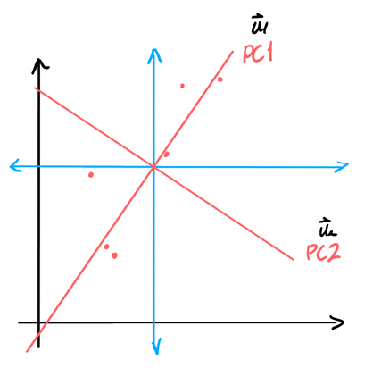

Principal Component Analysis
Table of Contents
1. Economy SVD
The economy SVD (also called the compact SVD) is a form of the SVD that removes the unusued information from the full SVD. Recall that we can use the full SVD to write any matrix in the form \(U\Sigma V^T\) like so:
\begin{align} U \Sigma V^T = \begin{bmatrix} | & | & & | \\ u_1 & u_2 & \cdots & u_n \\ | & | & & | \end{bmatrix} \left[ \begin{array}{cccc} \sigma_1 & & & \\ & \sigma_2 & & \\ & & \ddots & \\ & & & \sigma_m \\ \hline & & \mathbf{0} & \end{array} \right] \begin{bmatrix} \rule[.5ex]{1.5em}{0.4pt} & v_1^T & \rule[.5ex]{1.5em}{0.4pt} \\ \rule[.5ex]{1.5em}{0.4pt} & v_2^T & \rule[.5ex]{1.5em}{0.4pt} \\ & \vdots & \end{bmatrix} \notag \end{align}The column vectors of \(U\) (called the left singular vectors) span the column space of \(A\): it gives us an orthonormal basis for the column space of \(A\). The matrix \(\Sigma\) of singular values scales each of the columns of \(U\), and determines the relative “importance” of each of the singular vectors. The column vectors in \(V^T\) determine the “mixture” of the left singular vectors, scaled by the singular values, to create each of the column vectors of \(A\).
However, realize that some of the vectors are unused. We can remove these vectors, creating what is known as the economy SVD \(\hat{U}\hat{\Sigma}V^T\) by removing the left singular vectors corresponding to the zeroes in \(\Sigma\), and making \(\hat{\Sigma}\) into a square matrix:
\begin{align} \hat{U} \hat{\Sigma} V^T = \begin{bmatrix} | & & | \\ u_1 & \cdots & u_m \\ | & & | \end{bmatrix} \begin{bmatrix} \sigma_1 & & \\ & \ddots & \\ & & \sigma_m \end{bmatrix} \begin{bmatrix} \rule[.5ex]{1.5em}{0.4pt} & v_1^T & \rule[.5ex]{1.5em}{0.4pt} \\ \rule[.5ex]{1.5em}{0.4pt} & v_2^T & \rule[.5ex]{1.5em}{0.4pt} \\ & \vdots & \end{bmatrix} \end{align}We can then expand \(A\) as follows:
\begin{align} A = \sigma_1u_1v_1^T + \sigma_2u_2v_2^T + \cdots + \sigma_mu_mv_m^T \end{align}Crucially, since the singular values \(\sigma\) are ordered by decreasing magnitude (decreasing importance), we can “truncate” this linear combination to obtain an approximation for \(A\). It turns out that the singular values fall off very sharply, which means this approach can be used to effectively compress \(A\) using much smaller amounts of data.
2. Principal Component Analysis
Principal component analysis, or PCA provides a data-driven hierarchical system to extract important directions in a set of data — directions of maximum variance. Say we have \(n\) subjects or samples, \(m\) features, and a \(m \times n\) data matrix \(X\).
First, we apply a pre-processing step to de-mean the data matrix \(X \in \mathbb{R}^{m \times n}\). To do this, we first calculate the average vector \(\bar{\mathbf{x}}\):
\begin{align} \bar{\mathbf{x}} = \frac{1}{n}\sum_{k=1}^n\mathbf{x}_k = \frac{1}{n}X\mathbb{1} \end{align}We can view this vector as the mean of the features across all of the samples.
Then, we create the de-meaned data matrix \(A\) by subtracting each column of \(X\) with the average vector:
\begin{align} A = \begin{bmatrix} | & & | \\ x_1 - \bar{x} & \cdots & x_n - \bar{x} \\ | & & | \end{bmatrix} &= \begin{bmatrix} | & | & & | \\ x_1 & x_2 & \cdots & x_n \\ | & | & & | \end{bmatrix} - \begin{bmatrix} | & | & & | \\ \bar{x} & \bar{x} & \cdots & \bar{x} \\ | & | & & | \end{bmatrix} \notag \\ &= X-\bar{\mathbf{x}}\mathbb{1}^T \notag \end{align}Thus, we get:
\begin{align} \boxed{A = X-\frac{1}{n}X\mathbb{1}\mathbb{1}^T} \end{align}We can view this matrix \(A\) as how far each sample is from the “average sample”. Basically, we’ve shifted the coordinate space of \(X\) by the vector \(\bar{\mathbf{x}}\).
Now, we perform SVD on this matrix. PCA gives us the principal components of the matrix \(A\), which are the most important vectors that form a basis for the column vectors in \(A\). In other words, we’re interested in the \(\mathbf{u}\) vectors.
Notice that to describe the column space of \(A\), we only need \(m\) vectors (if \(m < n\)), since our matrix would be of rank \(m\). Thus, we only need \(m\) of the \(\mathbf{u}\) vectors. Moreover, since SVD sorts these vectors in order of importance, we know that \(\mathbf{u}_1\) would be the direction of maximum variation.
If we want to represent a column vector in \(A\) with just one coordinate, we would do its projection onto \(\mathbf{u}_1\) and use its coordinate along \(\mathbf{u}_1\):
